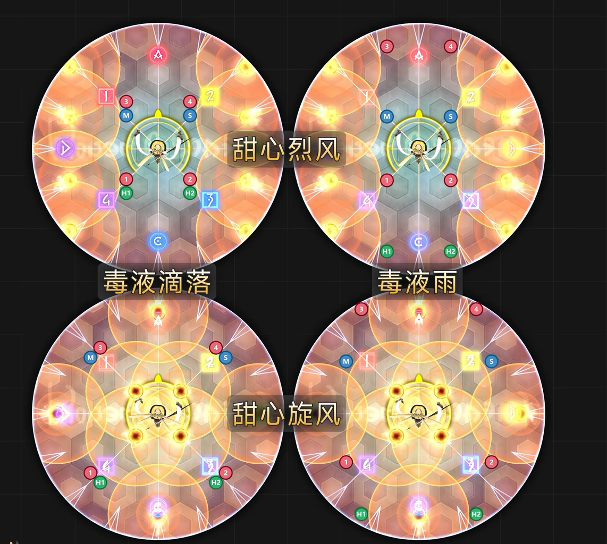
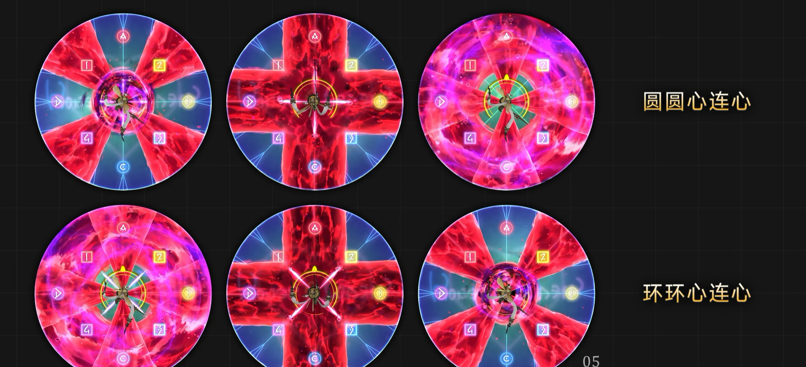
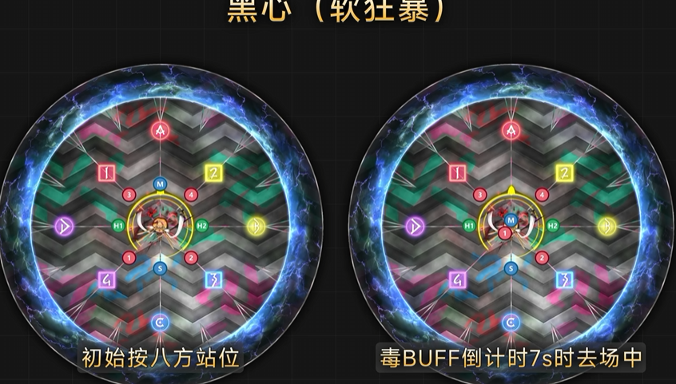

【阿卡迪亞零式】輕量級二層 蜂蜂小甜心
關卡簡稱：M2S | Boss：蜂蜂小甜心 BGM Bee My Honey 〜至天の座アルカディア：ライトヘビー級〜
甜言蜜語
傷害非常高的全體魔法攻擊。注意減傷。
毒液滴落 or 雨 → 甜心旋風 or 烈風
詠唱**「毒液滴落/雨」之後，會詠唱「甜心旋風/烈風」**。甜心旋風/烈風後會出現特定的圓形AOE，在安區處理毒液滴落的2人分攤和毒液雨的散開。 之後會頻繁詠唱OO滴落/雨，請務必確認與記憶。

殺人斬 or 殺人針
對坦克的物理死刑。殺人斬為對1仇使用雙人分攤死刑，殺人針則是點名1、2仇的扇形死刑。 兩者為隨機使用，ST請維持2仇。
因為是針對1、2仇，因此ST將仇恨維持在第2位。扇形範圍約90度，站在場地上北東北西的斜線上剛好。（其他6人在南邊不會被打到）
蜂蜂演唱會．首演
傷害非常高的魔法AOE，為全員賦予心醉魂迷狀態。此狀態會有層數與dot傷害，兩者呈正比，請適當使用護盾與hot吧。
・集滿４格之後會無法行動 + BOSS的HP回復 ・層數增加後dot的傷害也會增加
環環心連心 / 圓圓心連心

溫柔地愛我 → 求愛 → 溫柔地愛我
踩塔。每踩一次塔會讓心醉魂迷增加一層，這裡得讓近戰組變成2層、遠程組變成3層，按照此原則踩塔。另外，塔會出現在靠近或遠離BOSS的地方，內側請讓近戰組優先踩塔。 在之後，詠唱完「求愛」BOSS中央會打一個鋼鐵，此時中心與外圍會出現愛心。不久後會再詠唱「溫柔地愛我」，隨機選擇心醉魂迷層數最少的人分攤。在第一次溫柔地愛我時調整成2層的近戰組一邊躲避愛心，一邊在BOSS腳下分攤吧。
蜂蜂落幕曲
全體魔法AOE，至此「蜂蜂演唱會．首演」結束 。
警告賀爾蒙
外圍的蜜蜂會不斷瞄準各個玩家進行直線攻擊 ，記住攻擊預兆的先後順序後躲避，感覺有必要的話請使用衝刺來提升速度，盡全力躲避吧 。
蜂蜂演唱會．再演
全體魔法AOE後，從TH中選2人、DPS中2人賦予魂迷心醉兩層，其餘 4人沒有層數。此處1層與0層將要處理的機制會產生分歧。此外給予魂迷心醉後會直接詠唱愛之雨或愛之滴，記好這裡是分攤還是散開吧。
1心的人在北邊集合，0心的在boss腳下集合，當boss讀條溫柔地愛我後請1心的人一邊順時鐘繞著boss跑一邊分攤愛心跟誘導圓形aoe，之後會出現兩個塔並且點名2個0心的TH或D圓形分散，請沒有被點名的0心去採塔 TH採東北的塔 D去採西南的塔，之後處理甜心旋風 or 烈風。
警告賀爾蒙．第二回
標記坦補與DPS各一人釋放「毒液」，在場上留下大範圍毒圈（踩進去會有傷害）。場外出現4隻蜜蜂使用呈「#」字形的直線攻擊。重複四次在小怪攻擊範圍的外圍安區放置BOSS的毒液，最後坦補組與DPS組各有一人會被點名分攤。
蜂蜂演唱會．三演
這回我方全員0心。但是被賦予了一段時間後自身會引爆大範圍圓形的debuff。 debuff秒數分別有「45秒（晚）」與「25秒（早）」兩種，本次是同時處理debuff的大圈與踩塔的複合機制。 另外，debuff「大圈爆炸之後」再進塔，請記住且不要提早進去。
黑心
傷害非常高的魔法全體AOE，需要較厚的減傷及護盾。**AOE後全體玩家被賦予「α」、「β」的debuff。debuff分別有「1分、45秒、28秒、12秒」四種，擁有α與β的玩家重疊中和後beduff會消失，隨後引發全場大爆炸，全員受到傷害以及被賦予魔法易傷debuff。
α與β持有者在場中中和會消除debuff。消失的同時全員會受到傷害以及魔法易傷約7秒。中和的時機為自身debuff剩下5～6秒左右。若你按照此規則的話，便不用顧慮自己是α還是β？秒數是快還是慢？
黑心的流程為「αβ中和→魔法易傷7秒→甜言蜜語→…」這樣重複4次。重點在避免中和過程中的易傷與全體AOE重疊導致團滅。

驟然心痛
時間切的讀條。在詠唱完成前打倒BOSS吧！